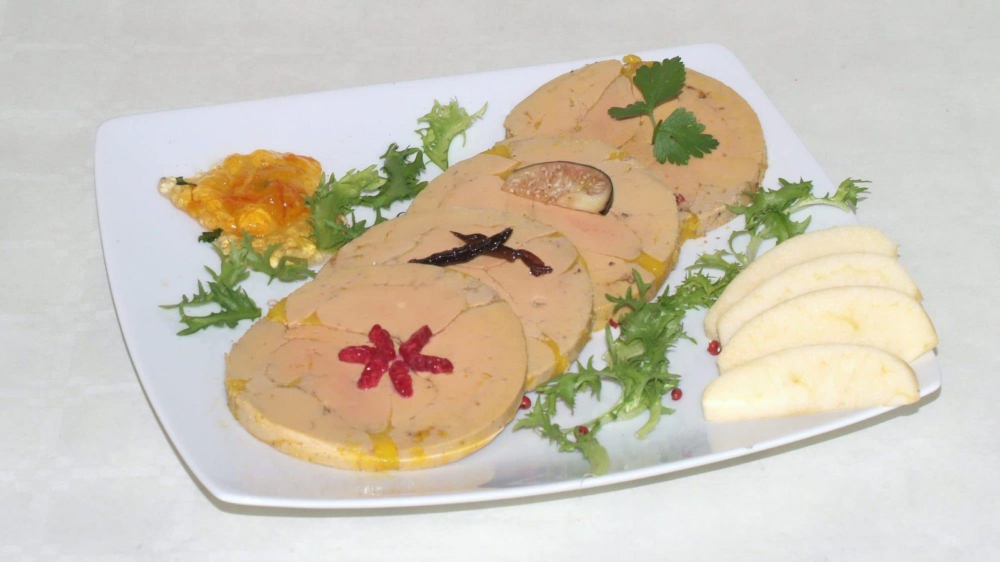
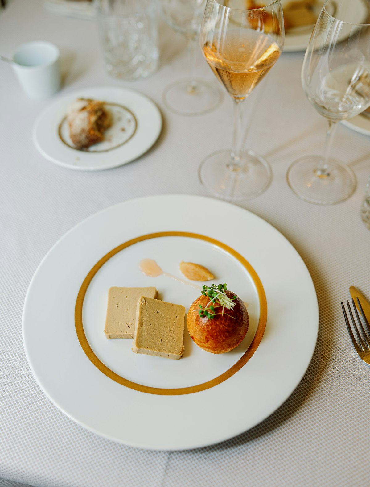
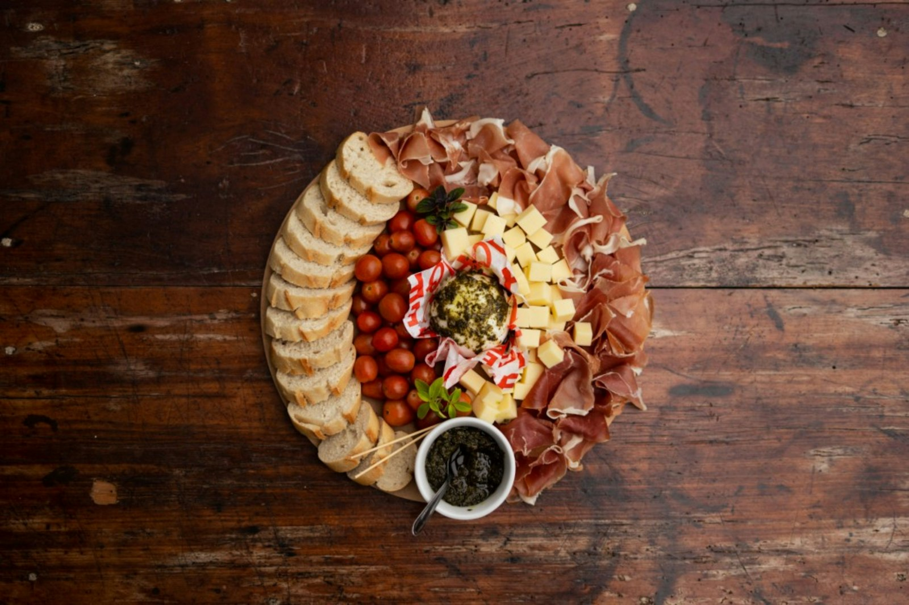
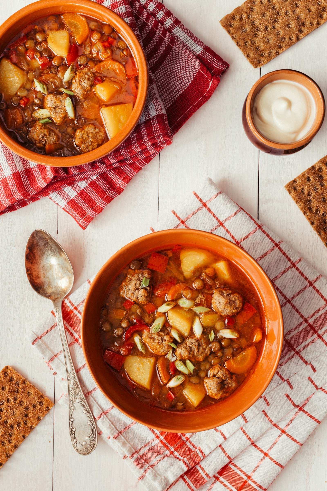

Salade périgourdine, gésiers confits et foie gras
La salade des déjeuners de fête : des gésiers tièdes, des noix, et quelques tranches de foie gras posées dessus.

Ingrédients
Préparation
- Préparez la vinaigrette en fouettant la moutarde, le vinaigre et le sel, puis l’huile de noix.
- Réchauffez les gésiers 3 à 4 minutes dans une poêle sans matière grasse : ils rendent assez de graisse. Égouttez-les.
- Toastez le pain.
- Assaisonnez la salade et répartissez-la dans les assiettes avec les tomates et les noix.
- Ajoutez les gésiers tièdes, quelques tranches fines de foie gras (couteau trempé dans l’eau chaude) et les toasts.
À cuisiner aussi
Toutes les recettes
Fêtes · EntréeLe foie gras de fête, brioche toastée et confiture de figues
Avec Foie gras de canard entier52,80 €

ApéritifTartines de pâté de sanglier, oignons confits
Avec Pâté de sanglier8,40 €

PlatCassoulet gratiné, croûte bien dorée
Avec Cassoulet aux haricots tarbais39,60 €